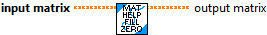

Ensure a matrix is the size that is needed.
Inputs:
- Input Matrix -- The matrix to be checked and resized if needed
- Rows -- The expected number of rows
- Columns -- The expected number of columns
Outputs:
- Output Matrix -- The potentially resized matrix
- Coerced -- If TRUE, the matrix size was modified.

Ensure that the B matrix is the correct size before performing the matrix multiplication A x B.
Inputs:
-- A -- A matrix
-- B -- B matrix
Outputs:
- Updated B -- B matrix, resized as necessary to multiply with A.
- Coerced -- If TRUE, the size of B was changed.

Zero the contents a a matrix
Inputs:
- Input Matrix -- The matrix to zero.
Outputs:
- Output Matrix -- The zeroed matrix.